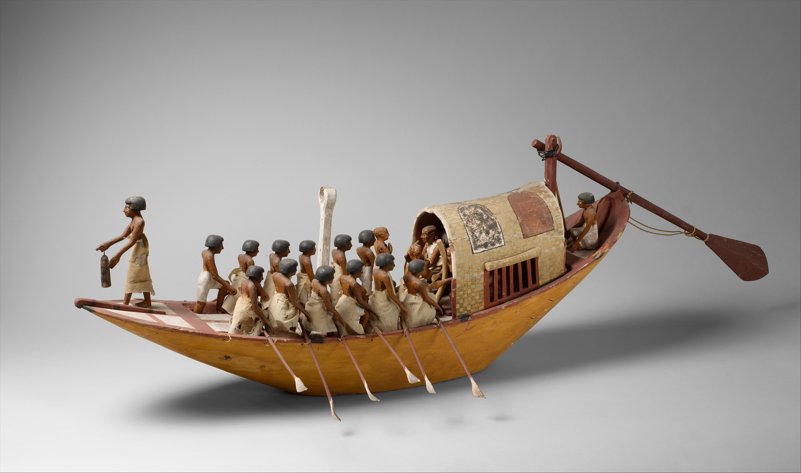
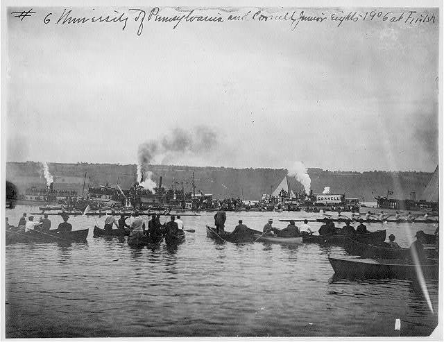
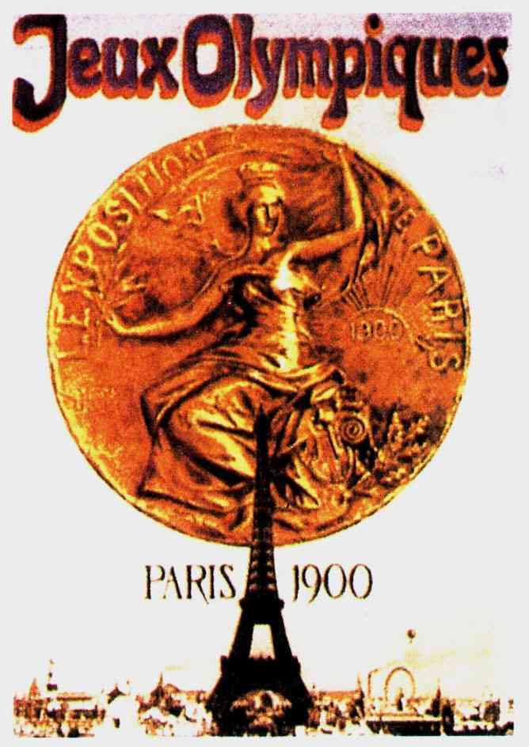

History of the Sport
Definition
Rowing is the "propelling of a boat using a fixed oar as a lever" according to Olympics.com. There are two different divisions of the sport: sweeping and sculling. In sweep events, each rower has a singular oar. In sculling events, each rower has two oars. Crews are made up of the athletes themselves and (generally) smaller individuals coined coxswains.
Ancient History
The action of rowing was a method in which individuals used to transport goods, services, and people in Egypt, Greece, and Rome. The act of rowing was also used to propel war vessels and ships in both Egypt and in the Roman Empire. Transportation of passengers thorugh the Thames River in London began in the 13th century.
Becoming an Established Sport
Entering the 19th century, rowing came to popularity in the United States in the form of ferrymen racing against one another. On the collegiate level, universities such as Oxford and Cambridge began to pick up the sport through the formation of teams in the 1820s. The year 1839 marked the first occurence of the Henley Regatta which still takes place today. American universities including Harvard and Yale began racing in 1851. This trend jumpstarted a chain reaction for other institutions in similar standing to begin clubs and integrate the sport as part of the local culture.
Olympics and Beyond
Rowing was added to the Olympics in 1900 for men and 1976 for women. The sport was positioned to be included in the 1896 Summer Olympics, but along the trend of many current-day rowing events, bad weather led to the cancellation of the events.
Currently, the sport consists of a 2,000 meter course in which crews compete in either sculling or sweeping boats. There are a multitude of events to compete within including both women's and men's events:
- Lightweight Women's Double Sculls
- Men's Double Sculls
- Men's Eight
- Men's Four
- Men's Pair
- Men's Quadruple Sculls
- Men's Single Sculls
- Women's Double Sculls
- Women's Eight
- Women's Four
- Women's Pair
- Women's Quadruple Sculls
- Women's Single Sculls
Modern day competitions line up crews six lanes across and have them all race at the same time in a head-on style. Looking at rankings specifically, the United States boasts the greatest number of metals (89) with Great Britain following (70). The United States is tied with East Germany (GDR) for the greatest number of gold medals.